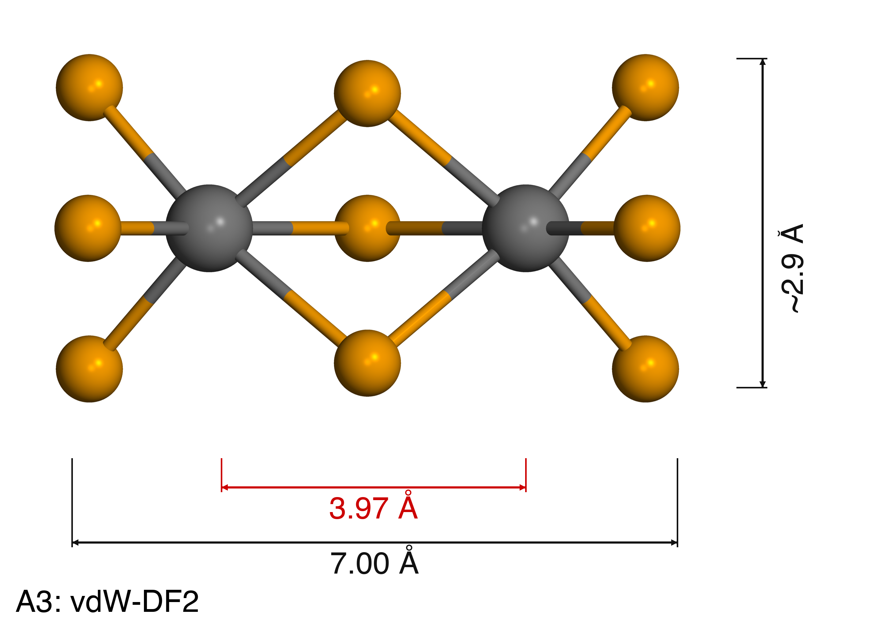
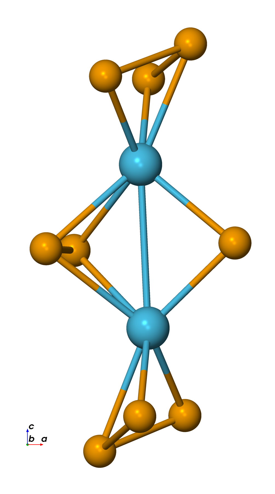
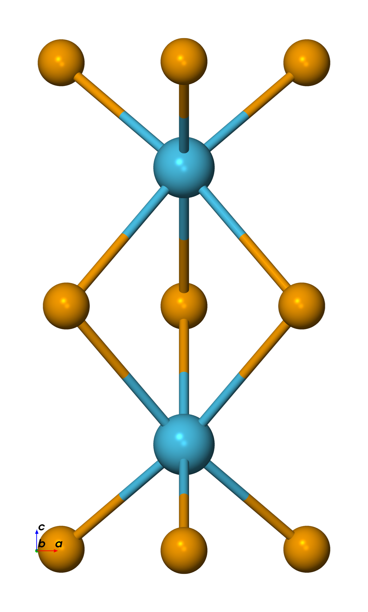
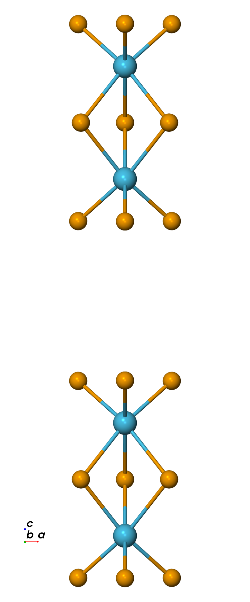
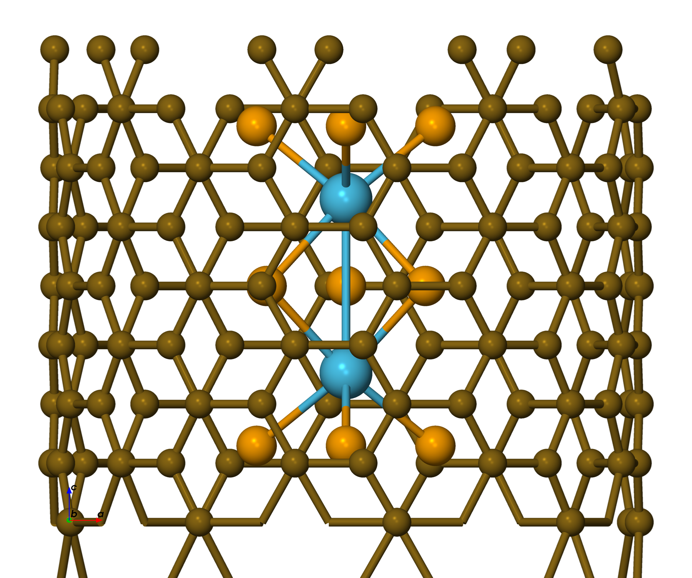

02. Hf₂Se₉ relaxation 안정성: functional & vdW 스캔
목표
Hf₂Se₉ 분자 relaxation이 안정적으로 수렴하면서 실험 구조를 재현하는 DFT 설정을 찾는다. 이전 계산들은 반복적으로 실패했다 (셀 팽창 16–53%, 구조 붕괴). 원인을 분리하기 위해 독립적으로 네 가지 축을 검토한다: exchange–correlation functional, basis set, DFT+U, CNT 갇힘(confinement). 테스트 시스템은 Hf₂Se₉ 분자 (11 atoms, 25 Å 입방 셀, Γ-only)로, 가장 가벼운 경우이며 설정을 빠르게 스캔하는 데 쓴다.
합격/불합격 기준 (TEM 기준 Hf–Hf = 3.6 Å)
| 기준 | 성공 | 실패 |
|---|---|---|
| Hf–Hf 거리 | 3.5–3.8 Å 유지 | < 3.0 Å (붕괴) 또는 > 5.0 Å (분해) |
| Force 수렴 | < 0.01 eV/Å | 미수렴 (> 1000 steps) |
| 구조 | confacial bioctahedron 유지 | Se₃ 삼각형 왜곡, Hf 이탈 |
| 실험 일치도 | Hf–Hf 편차 < 5% | 편차 > 10% |
방법 — Phase A: exchange-correlation + vdW 스캔
고정: basis EnergyShift 0.01 Ry (136 meV), U = 0, CNT 없음. 가변: functional + vdW 방법.
| # | Functional | vdW | 코드 | 목적 |
|---|---|---|---|---|
| A1 | PBE | 없음 | SIESTA | baseline — vdW 없이도 구조가 유지되나? |
| A2 | PBE + Grimme D2 | fdf2grimme | SIESTA | 이전 설정 재현 |
| A3 | vdW-DF2 (LMKLL) | built-in | SIESTA | revPBE exchange, non-local correlation |
| A4 | PBE + D3(BJ) | DFT-D3 | SIESTA | coordination-number 의존 C₆ |
| A5 | PBE + D3(BJ) | IVDW=12 | VASP | plane-wave 레퍼런스 — NAO-basis 문제 분리 |
| A6 | HSE06 + D3(BJ) | IVDW=12 | VASP | 하이브리드 functional — exchange 정확도 |
결과
Phase A — Hf–Hf 거리
| 테스트 | Functional | Basis | 코드 | Hf–Hf (Å) | Δ(3.6 Å) | 수렴 | 비고 |
|---|---|---|---|---|---|---|---|
| A1 | PBE | 136 meV | SIESTA | 3.857 | +7% | ✅ 14 steps | vdW 없이도 유지됨 |
| A2 | PBE+D2 | 136 meV | SIESTA | — | — | ❌ | SCF 미수렴 (3회 실패, 원인 미규명) |
| A3 | vdW-DF2 | 136 meV | SIESTA | 3.967 | +10% | ✅ 13 steps | revPBE exchange |
| A4 | PBE+D3(BJ) | 136 meV | SIESTA | 3.857 | +7% | ✅ 14 steps | = A1 (고립 분자에는 D3 효과 없음) |
| A5 | PBE+D3 | PAW | VASP | 2.934 | −18.5% | ✅ | plane-wave 레퍼런스 |
| A6 | HSE06+D3 | PAW | VASP | 3.330 | −7.5% | ✅ | 전체 중 가장 근접 |
SIESTA 내에서는 PBE와 PBE+D3(BJ) (3.857 Å)가 실험에 가장 가깝고, vdW-DF2는 더 과팽창한다 (3.967 Å). VASP HSE06+D3 (3.330 Å)가 전체 중 가장 가깝지만 SIESTA↔VASP 불일치가 크다. A2 (PBE+D2)는 SCF 수렴에 반복 실패한다 — 원인 아직 미규명.




분자 vs 사슬 (vdW-DF2)
| 분자 (05) | 사슬 (06) | |
|---|---|---|
| 초기 Hf–Hf | 3.62 Å | 3.62 Å |
| Relaxed Hf–Hf | 3.967 Å (+10%) | 4.164 Å (+15.7%) |
| vdW gap (사슬) | — | 5.89 Å (+68%) |
| Force | 0.027 eV/Å (≈ 수렴) | 0.39 eV/Å (불안정) |
둘 다 실험값 (3.6 Å) 대비 과팽창하며, 사슬이 더 나쁘다 — 주기적 vdW 상호작용이 누적되고 revPBE의 추가 반발이 팽창을 가속하기 때문이다. 별도의 PBE+D2 사슬 계산은 OOM 전까지 197 steps에 도달했다 (Hf–Hf = 4.47 Å, max force = 0.094 eV/Å, 미수렴).


이전 relaxation이 실패한 이유 (아카이브 분석)
아카이브에 있는 단독 Hf₂Se₉-사슬 relaxation 시도 6건:
| 시도 | 조건 | 결과 |
|---|---|---|
| 001_rlx | 중성, D2, EnergyShift 10 meV | c-축 +16% 팽창 |
| 002_totcharge-2 | charge −2 | 여전히 팽창 |
| 003_originstruct | 1-unit (11 atoms) | c-축 −22% 수축 (반대 방향) |
| 005_basis50 | EnergyShift 50 meV | 거의 변화 없음 (수렴 여부 불명확) |
| 006_basis50_tot-2 | 50 meV + charge −2 | c-축 +53% → 사슬 분해 |
규명된 근본 원인:
- Grimme D2 Hf C₆ 부정확성. C₆는 vdW 인력 세기를 결정한다 ($E_\mathrm{disp} = -C_6/R^6$). D2는 고정된 free-atom 값을 쓰는데, free Hf는 C₆ = 1089.41 eV·Å⁶이지만 Hf₂Se₉ 내부에서 Hf는 6개의 Se에 둘러싸여 있어 실제 C₆는 훨씬 작아야 한다. D2는 이 환경 의존성을 무시한다. D3(BJ)는 coordination number로부터 C₆를 보간해 이를 바로잡고, vdW-DF2는 경험적 파라미터를 아예 쓰지 않는다 (vdW 에너지를 전자 밀도에서 직접 구함).
- Basis-set 민감도 (BSSE). 큰 basis (10 meV) → 16% 팽창; 작은 basis (50 meV) → 거의 변화 없음. vdW-gap 에너지 (~수십 meV)가 BSSE 오차 범위 안에 있다.
- MD.VariableCell = T. c-축 relaxation을 허용하면 평평한 PES가 작은 힘에도 vdW gap을 붕괴시키거나 팽창시킬 수 있다.
- 시작 구조 의존성. 2-unit-cell 시작은 팽창하고, 1-unit-cell bulk 추출 시작은 수축한다 — 같은 시스템에 대해 반대 방향.
- 헤테로 구조의 "가짜 수렴(false convergence)." lead당 VSe₃ 단위 셀 3개인 헤테로접합에서 1-step 수렴은 VSe₃ cage 효과 (kinetic trapping)이지 진짜 최소점이 아니다. 반면 DFT-D3를 쓴 VASP MD는 Hf–Hf = 3.82 Å를 유지했다.
vdW 보정 비교: D2 vs D3(BJ) vs vdW-DF2
Grimme D2 (Grimme 2006)는 PBE 위에 dispersion을 더한다:
$$E_\mathrm{disp} = -s_6 \sum_{i여기서 non-local correlation $E_c^{\mathrm{nl}}$는 커널 $\Phi$와 함께 전자 밀도 $n(\mathbf{r})$에서 직접 계산되며, revPBE exchange (PBE보다 더 반발적)를 쓴다. 기호: $C_6^{ij}$ = pairwise dispersion 계수, $r_{ij}$ = 원자 간 거리, $f_\mathrm{damp}$ = short-range damping, $s_6$ = global scaling.
| 특징 | D2 | D3(BJ) | vdW-DF2 |
|---|---|---|---|
| C₆ 결정 방식 | 고정 (원소당 1개) | CN 의존 보간 | 밀도에서 직접 |
| 환경 적응성 | 없음 | CN 경유 | 완전 self-consistent |
| Exchange functional | PBE | PBE | revPBE |
| damping | zero (불연속) | BJ (매끄러움) | 불필요 (seamless) |
| SIESTA 지원 | built-in (grimme.fdf) | 조건부 (libdftd3; 5.2.x에는 없음) | built-in (XC.functional VDW) |
| Hf₂Se₉에 대한 신뢰도 | 낮음 (실패 관측됨) | 높음 (VASP 검증됨) | 높음 (이론적) |
비교 방법론 ("더 낫다"를 어떻게 판단하는가)
Total energy는 functional 간에 비교할 수 없다 — 각각 $E_{xc}$를 다르게 근사하고 서로 다른 에너지 기준을 쓴다 (예: vdW-DF2는 revPBE, D2는 PBE 사용). 유효한 비교는: (1) relaxed 구조 파라미터 vs 실험 (가장 중요 — Hf–Hf vs TEM 3.6 Å); (2) 같은 functional 내에서의 상대 에너지 (예: vdW-DF2에서의 41 meV/atom TP–TAP 차이); (3) 한 functional 내에서의 binding/cohesive 에너지; (4) 수렴성과 구조 안정성이다.
Phase C — CNT 갇힘(confinement) (계획)
실험적으로 Hf₂Se₉는 CNT 내부에서 합성/관측된다. Phase C의 질문은 CNT가 기하 구조를 실험 Hf–Hf 쪽으로 실제로 안정화하는지, 아니면 단순히 운동을 막아 준안정 기하 구조를 가두는 것뿐인지다. 첫 계산은 JACS 2021 NbTe₃/VTe₃/TiTe₃@CNT 프로토콜 (10.1021/jacs.0c10175)을 따라 "CNT 원자 고정, Hf₂Se₉만 relax"로 계획되어 있다. CNT chirality에 대한 지름 스캔 (내경 ≈ 12 Å 필요; (9,9)와 (16,0)을 시작 후보로)이 relaxation과 MD에 앞선다. 상태: 구조 뼈대만 준비됨; (9,9)+Hf₂Se₉ 조립체를 생성했다.

논의 / 다음 단계
- 최적 XC + EnergyShift (Phase A/B) 확정 후, DFT+U 스캔 (Phase D), 그다음 CNT (Phase C).
- A2 (PBE+D2) SCF 실패 해결; 코드 의존성 분리를 위해 QE A7 확보.
- 고립 분자에는 D3 효과가 없으므로, 선택한 functional을 사슬에서 검증.